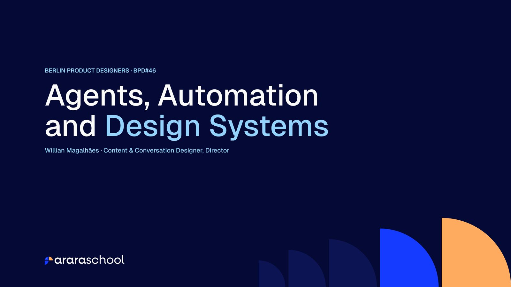

Talks
Willian Magalhães talks

Berlin Product Designers Meetup #46 · Raisin, Berlin · 12 November 2026Agents, Automation and Design Systems with AI Berlin Content Design Meetup · October 2026From plugin to pipeline Three levels of content design automation
Berlin Content Design Meetup · October 2026From plugin to pipeline Three levels of content design automation